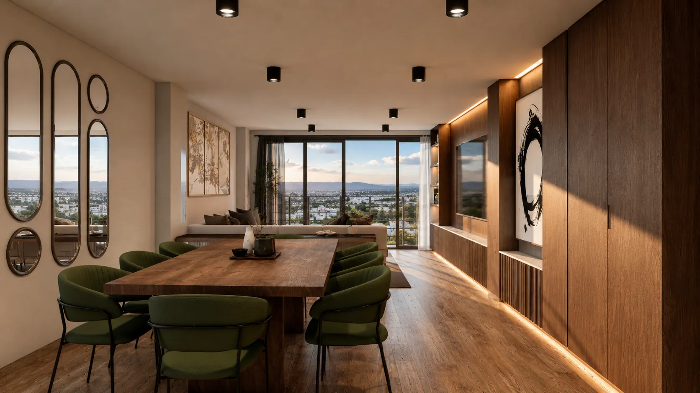

- Type
- Residential architecture
- Location
- Juriquilla, Querétaro
- Year
- 2026
- Area
- 270 m²
- Status
- Conceptual proposal
- Process
-
- Idea
- Transformation
- Matter
Idea
Penthouse Juriquilla was born from the desire to turn a residence into a space able to reflect the personality, hobbies and way of living of its owner. Inspired by the atmosphere of golf clubhouses, the project seeks to bring their warm, elegant and social character into the intimacy of the home.
The proposal starts from a central idea: conceiving the home as a personal refuge that also celebrates gathering.
Wood becomes the common thread of the design, bringing visual continuity, warmth and understated elegance to the different spaces. Travertine marble introduces a natural, timeless expression, while steel and fluted glass complete the composition with a contemporary language.
The spatial organization separates private from social areas, allowing everyday life and recreational activities to coexist without losing their independence.
The terrace takes on a leading role as a livable extension of the residence. A pergola defines the outdoor gathering space, while a room for a private golf simulator brings one of the owner’s main hobbies into the domestic setting.
Beyond its material expression, the project seeks to build an atmosphere of belonging. A place that invites you to stay, share and enjoy, where exclusivity does not depend on ostentation, but on the relationship between the space and those who inhabit it.
Penthouse Juriquilla proposes a contemporary interpretation of the clubhouse: an architecture that finds the balance between intimacy, recreation and hospitality.



Process
One of the project’s main challenges was rethinking the vertical connection between the penthouse and its terrace. The existing spiral staircase offered limited circulation and conditions that were far from comfortable or safe.
The intervention proposed using the entire stairwell to develop a new configuration, increasing the usable tread surface and improving circulation between the two levels.
This decision made it possible to understand the remodel not only as an aesthetic transformation, but also as an opportunity to improve the functionality of the home.
On the terrace, the program was expanded to include new forms of recreation and gathering. The pergola and the golf simulator space respond to the social character of the project, while a shower built in next to the bathroom offers a practical solution for pet care, keeping this activity out of the interior spaces.
Each intervention responds to a particular way of living: from the safety of moving around the home to small everyday rituals.
In this way, architecture stops being limited to the appearance of the space and begins to respond to the identity of whoever lives in it.
Technical data
- Type
- Residential architecture / Remodel / Interior design
- Status
- Unbuilt conceptual proposal
- Area
- 270 m² of intervention (180 m² interior + 90 m² terrace)
- Materials
- Wood, steel, travertine marble and fluted glass.
- Images
- Digital architectural visualizations (renders).
- Credits
- ARQUEMIST.

“True luxury is living in a space that recognizes who you are.”